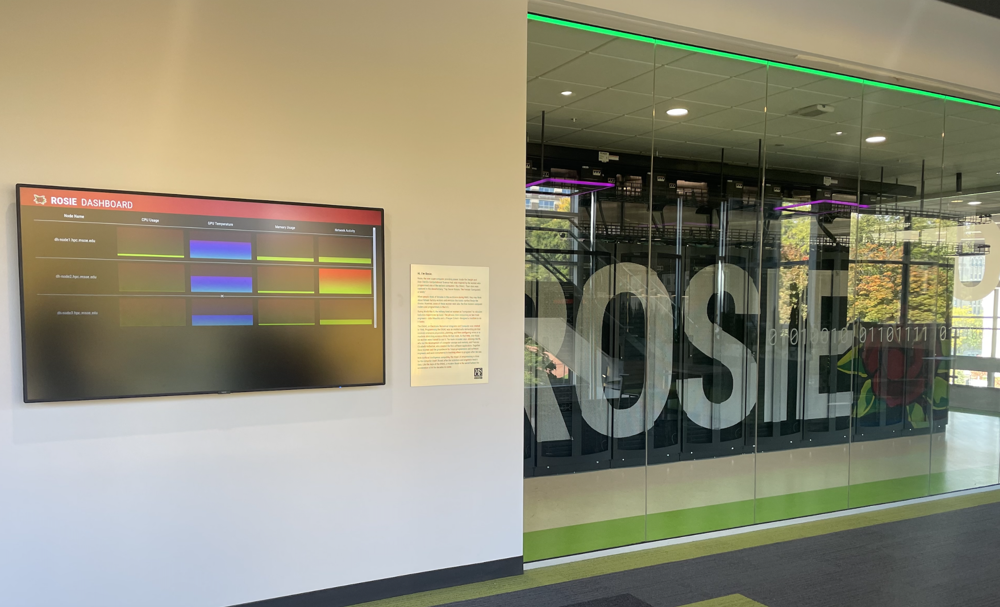
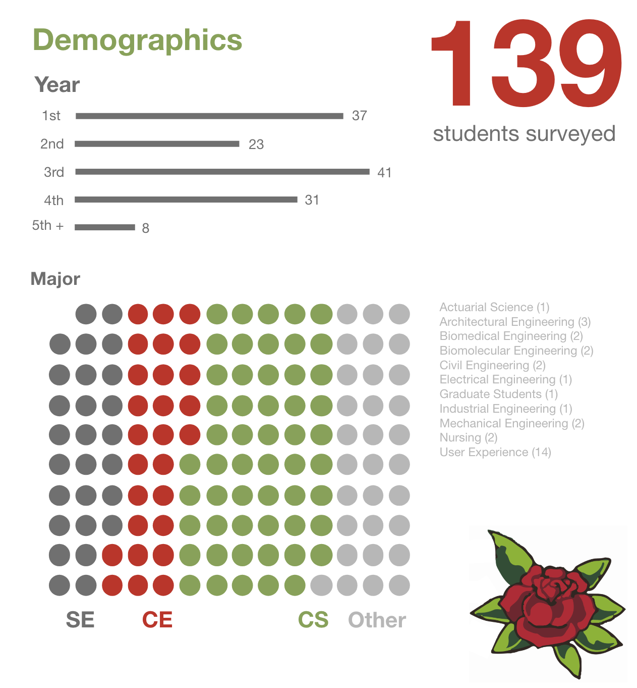
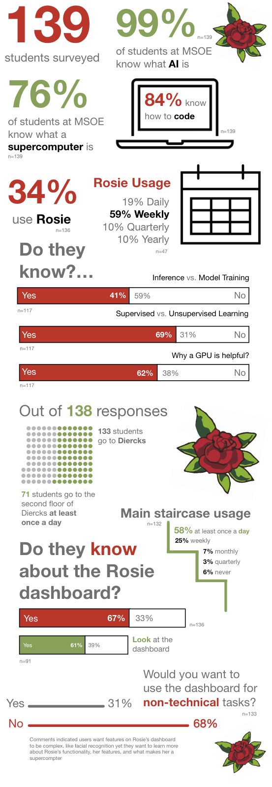
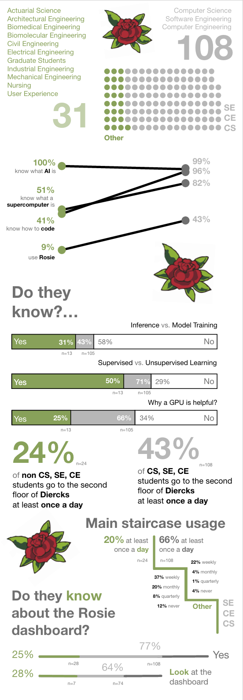
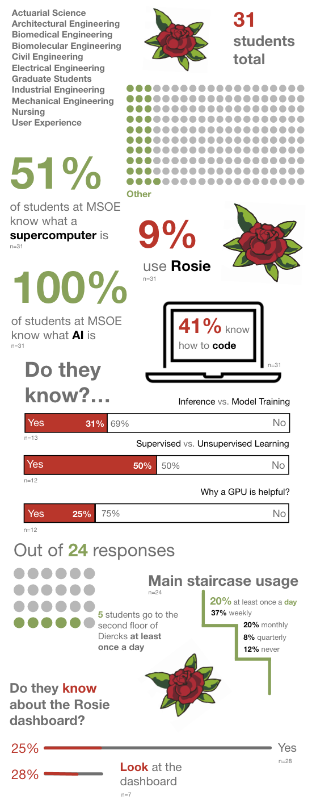

How can we make a dashboard that users of varying knowledge levels can understand?
Timeline
September 2022 - November 2022
Skills
Survey Writing
Data Analytics
Data Visualization
User Interviews
Team
Individual
* My research was given to a group of 5 Computer Science students
who coded the dashboard
Project Overview
On the campus of Milwaukee School of Engineering (MSOE), we have a supercomputer named Rosie located in Diercks Hall. To the left of Rosie, there is a TV that projects a dashboard with statistics from Rosie. The current state of this dashboard is not interactive, no one knows if anyone looks at it, and half of the time it is not even on. What makes this problem unique is that the user base has a broad range of knowledge about supercomputers and this dashboard is in a public space where many students frequently walk by.
The purpose of this dashboard is to be an interactive experience for technical users as well as non-technical users. The current plan for this dashboard is to utilize AI to allow users to talk, make gestures, and potentially use a keyboard to interact with the display. The display for the dashboard is intended to have a few different modes, the current modes include a Standard Dashboard, Photo Booth, Art and AI, Home Screen, Arcade, More, and Help. Throughout this experience, there will be a conversational AI component interacting with the user to allow for a more engaging experience.
This problem was solved by launching a survey to understand the current user's knowledge level as well as user interviews to understand how the users interact with the new dashboard prototype.

MSOE Supercomputer, Rosie and current dashboard
Process
Survey Planning
Research Questions
Who are the current users?
What do these users know about supercomputers?
Do the users know about the dashboard?
Will the users interact with the dashbaord in a public space?
How do the users want to interact with the dashboard?
What does the team want to know?: Who there users are, what
their users' know about Rosie, and how often they go to Dierck's Hall.
Tool: Qualtrics
Population: MSOE Students
Length of Survey: 9/30-10/7/22
Assumptions:
CS, SE, and CE students will understand the technical questions in the survey and technical components on the dashboard, with 3rd- and 4th-year students knowing the most
CS, SE, and CE professors will understand the technical questions in the survey and technical components on the dashboard
Other majors students and professors will know about Rosie and might know about the dashboard but will not understand the information
Survey Writing
Brainstorming survey questions and flow of survey
Analyze Results
Creating themes from short answers
Finding Main Ideas from Multiple Choice Answers
Sketches
Infographics




All Majors
Comparison of CS, SE, CE and Other Majors
CS, SE, CE Majors
Other Majors
Personas
Interview Planning
Brainstorming questions and understanding the flow of the interviews
Interviews
Background: 30 min in person interviews, done with me moderating, and 1-2 members of the SD team present to help answer questions and work the prototype.
The prototypes tested were on a laptop instead of the tv screen with one prototype being the Figma file with the home, arcade, emotion/photo booth mocked up which was accompanied by the SD medium/low fidelity emotion recognition and photobooth feature on a separate computer.
Purpose: Show students early concepts of the dashboard
Goals: To understand how students would interact with the dashboard in particular with the hand and voice navigation, additionally to gather insights for other features that are not fully developed yet like the arcade, tour, leaderboard, and general UI.
Participants:
2 Other Majors - 1st Years (IE & BME)
2 UX Majors - 1st & 3rd Years
3 CS Majors - 1st, 2nd, & 3rd Years
Interview Results
Top Findings
Confusion with hand navigation - all participants asked how to use it or struggled immensely
Voice and text - mixed reviews, but lots of concerns with the amount of noise people would generate if interacting with voice
Many students do not know what voice assistants are (but they understand Siri, Google, etc)
6/7 students would like to start the interaction with Red
Students really liked the emotion/photo booth and thought it would be fun for prospective students
Students seemed really excited about the arcade mode potential
Students seemed really motivated to learn about Roise through the tour mode
Key Quotes
"I would be scared using it [the dashboard] the first or second time maybe have a pop up telling me how to use the dashboard." (UX student)
"Would like a way to show how to start or touch the dashboard to activate it. Not everyone would know that from a first glance at the dashboard, because people might think it is just a tv." (CS student)
"I did not expect this [emotion detection] because I did not know you could do this. (UX student)
"I saw it [emotion detection explanation paragraph] but I did not read it, the UI made sense without reading the paragraph." (CS student)
Challenges
Through this project, one of the challenges I faced was communication with the team. There was a lack of communication early on, which was a little awkward. But this is an example of how I could have used more confidence and communicated with the team more, and how I could have started to communicate with the team better from the beginning. I think I improved on this later in the term, especially when I was working on the user interviews. This experience will help me be better prepared for a career in industry because I need to be more confident, especially when I am an expert on a topic, like in this instance. Furthermore, having the ability to communicate effectively with technical-minded teams will be a skill that is important for the future.
Impact
The CS Senior Design Team is able to take my insights to inform their design for their dashboard which will be displayed on campus next year and a destination for perspective students to visit on tours.
The data from the survey and interviews were given to the MSOE Computer Science Program Director to spark ideas for future class projects for the Computer Science Program, which will impact many CS students in the future.
Lessons Learned
One skill I learned was how to become an expert in a topic, which I practiced by sharing my research confidently to other students and Professors. Although I did not completely perfect the skill of confidence, I did get ample opportunities to work on this skill when presenting my research findings.
A soft skill I learned through this process was how to communicate and work with a technical-minded team, like the CS team I worked with. In the first part of the term, I felt like the communication with the team was a little disjointed, but after I gave them the survey results, I felt like the communication opened up and I started to work with the team more.
A tool I learned in this project was Qualtrics. The main component of Qualtrics that I learned was how to make skip logic for the survey. Another component I learned about Qualtrics was how to analyze the data using the filter tab to start to compare the different user groups.